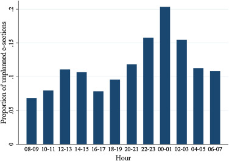
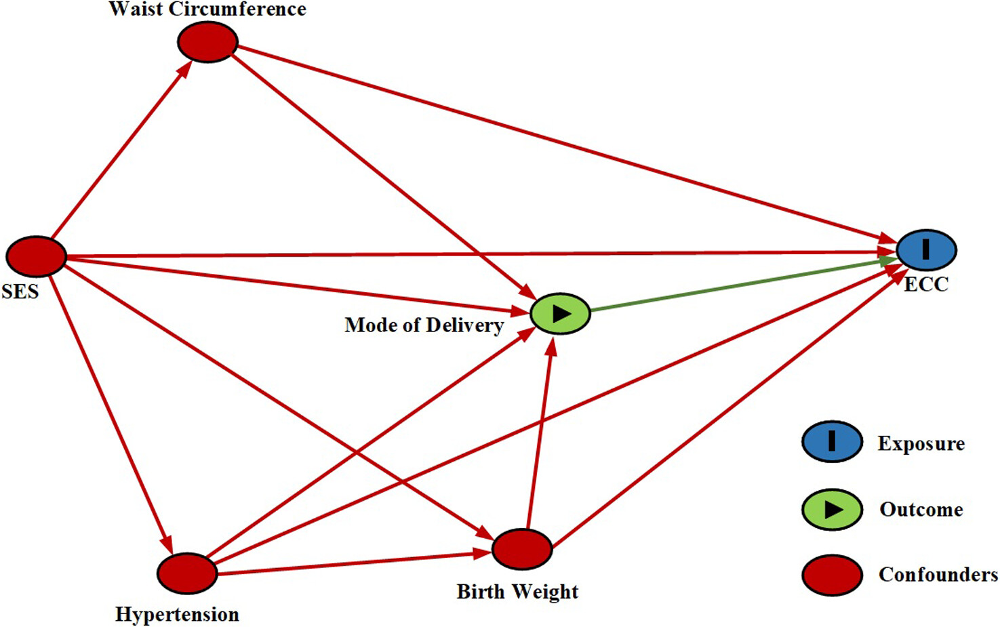
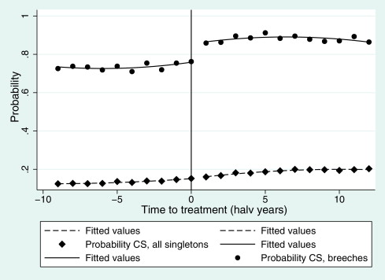
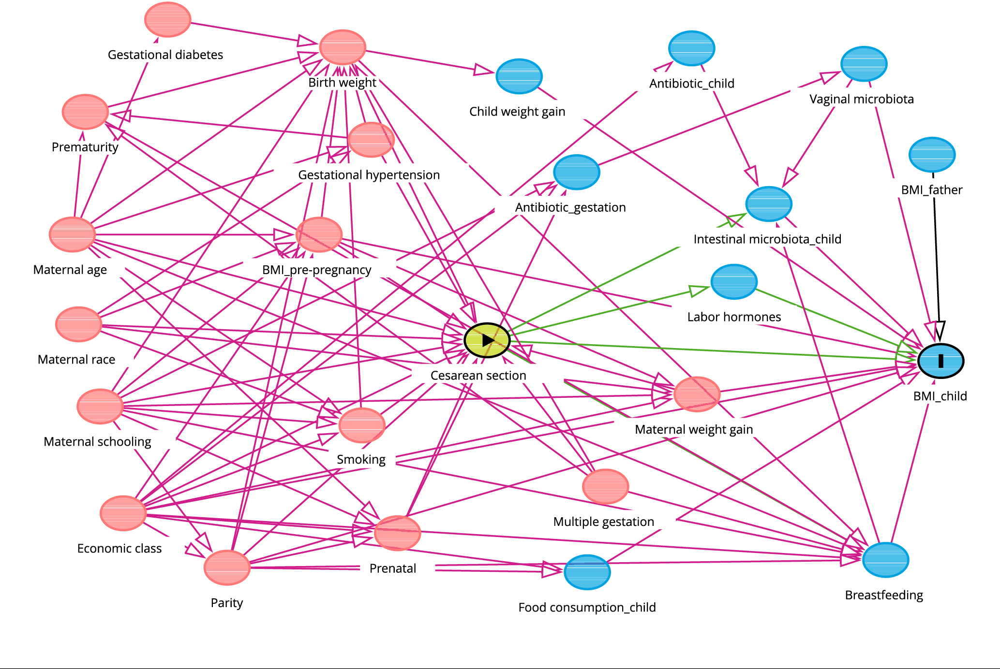

Obstetric studies assessing intervention effectiveness#
Executive summary
This page summarises examples of studies in obstetrics that have attempted to estimate the causal relationship between a treatment and exposure (such as between caesarean section and newborn health).
Instrumental variable - Costa-Ramón et al. 2018; Costa-Ramón et al. 2022; Halla et al. 2016; Jachetta 2015; Card et al. 2018; Tonei 2018; Chen and Pan 2022; Dawe et al. 2017;
Difference-in-differences - Costa-Ramón et al. 2022;
Propensity score matching - Helenius et al. 2019; Pyykönen et al. 2017;
Marginal structural model - Ladeira et al. 2021;
Inverse probability of treatment weighting - Cavalcante et al. 2022;
Regression discontinuity design - Jensen and Wüst 2015;
Randomised trial data - Badurdeen et al. 2024;
Costa-Ramón et al. 2018#
Study: It’s about time: Cesarean sections and neonatal health. [Costa-Ramón et al. 2018]
Aim: Estimate causal relationship between caesarean section and newborn health:
Apgar-1 and Apgar-5
Reanimation (assisted ventilation)
ICU admission
Neonatal death
Umbilical cord pH
Reason for causal inference: Comparing women who had C-section to those who had vaginal birth…
Suffers from omitted variable bias - they differ in characteristics that influence outcome - and analysis found observable characteristics that can relate to newborn health differed significantly (age, gestational length, obstetric risk, education achievement)
‘Does not allow to identify which kind of c-section is causing whatever health effects are found, since we observe the outcomes of both medically and non-medically indicated interventions’
Method:
Instrumental variable approach - use time of birth as instrument for mode of delivery
Time of birth is associated by whether receive the treatment - unplanned C-sections more likely in early hours of the night
Time of day unrelated to outcome and to other confounders - mothers giving birth at different times of day are observationally similar - suggesting excess number of C-sections observed are due to non-medical reasons
OLS regression with outcome of neonatal health, and predictors of:
Mother’s personal and pregnancy characteristics
Estimate from a regression with outcome of whether delivery was unplanned C-section or vaginal delivery and predictor is whether woman gave before from 11pm-4am or not (which is when obstetricians are more likely to, to get time for rest or leisure)

My DAG:
Costa-Ramón et al. 2022#
Study: The Long-Run Effects of Cesarean Sections. [Costa-Ramón et al. 2022]
Aim: Estimate causal relationship between potentially avoidable caesarean sections and health outcomes:
Neonatal - ‘Apgar scores one minute after birth, admission to intensive care unit (ICU), need of assisted ventilation, and early neonatal mortality (defined as neonatal death in the first week of life)’
Longer-term - ‘asthma, atopic diseases (atopic dermatitis and allergic rhinitis), type 1 diabetes, and obesity’
Methods:
(1) Instrumental variable approach
Use combination of (1) type of day - working or pre-leisure day, and (2) work shift - normal or not - as found that unplanned C-section more likely during the normal working shift on pre-leisure days compared to regular working days
Use 2SLS estimator to identify a local average treatment effect (LATE)
(2) Difference-in-differences
For sample of sibling pairs, where older sibling was born by vaginal delivery, then ‘compare the health gap between siblings in families where the second child was born by an unplanned C-section with families where the second child was born by vaginal delivery’
This controls for ‘time-invariant unobserved heterogeneity at the family level and the effect of birth order’
My explanation: Difference in differences compares change in continuous population-level outcome (neonatal health) between exposed (caesarean) and unexposed group (vaginal)
Extracts from results:
‘We find that the OLS results replicate existing findings. Cesarean sections are associated with adverse outcomes at birth and higher neonatal mortality. Our 2SLS estimates are not significant for any of the outcomes. However, the magnitude of coefficients and large standard errors suggest that we cannot reject that there is a (potentially large) effect on neonatal outcomes… 2SLS estimates are expected to be particularly uninformative with low treatment and outcome probabilities.’
‘Bivariate probit marginal effects are substantially more precisely estimated than the 2SLS coefficients, yet all point estimates from the bivariate probit models are within the confidence intervals of the 2SLS estimates. The bivariate probit results suggest that unplanned C-sections increase the probability of having a low Apgar score (Apgar lower than seven), being admitted to the intensive care unit, and receiving assisted ventilation. The magnitudes of the bivariate probit marginal effect estimates are similar to OLS estimates. However, we do not find significantly increased mortality risk within seven days after birth. The results from the differences-in-differences models give support to these findings with similarly sized and more precise coefficients. Overall, our results suggest that unplanned C-sections have a negative impact on neonatal health. However, these adverse effects do not translate into a higher probability of early neonatal mortality.’
‘Our empirical strategy builds on numerous studies that have used siblings fixed effects to estimate the impact of health shocks while in utero or after birth’ - for example:
[Oreopoulos et al. 2008] - Short-, Medium-, and Long-Term Consequences of Poor Infant Health: An Analysis Using Siblings and Twins
[Almond, Edlund, and Palme 2009] - Chernobyl’s Subclinical Legacy: Prenatal Exposure to Radioactive Fallout and School Outcomes in Sweden
[Almqvist et al. 2012] - The impact of birth mode of delivery on childhood asthma and allergic diseases–a sibling study
[Aizer, Stroud, and Buka 2016] - Maternal Stress and Child Outcomes: Evidence from Siblings
My DAG for the instrumental variable part:
Halla et al. 2016#
Study: Cutting fertility? The effect of cesarean deliveries on subsequent fertility and maternal labor supply. [Halla et al. 2016]
Aim: Identify effect of caesarean delivery on subsequent fertlity and maternal labour supply
Method:
Instrumental variable approach - uses day of week as instrumental variable
Obstetricians less likely to do caesarean deliveries on weekends and public holidays, and are incentivised to do them on Fridays and days before public holidays
‘Women giving birth on different days of the week are pre-treatment observationally identical’
My DAG:
Jachetta 2015#
Cannot find paper, so notes are from Costa-Ramón et al. 2018’s description of the study
Study: Cesarean Sections and Later Health Outcomes. Jachetta 2015.
Aim: Estimate causal relationship between caesarean section and hospitalisation (total or resulting in asthma)
Method:
Instrumental variable approach - use ‘variation in medical malpractice premia at the Metropolitan Statistical Area (MSA) level in the US as an instrument for the rate of risk-adjusted cesarean sections’ - though note some threats to the validity of the instrument
Helenius et al. 2019#
Study: Association of early postnatal transfer and birth outside a tertiary hospital with mortality and severe brain injury in extremely preterm infants: observational cohort study with propensity score matching. [Helenius et al. 2019]
Aim: Relationship between birth in non-tertiary hospital, or birth then transfer to tertiary, and adverse outcomes.
Studies have found care extremely pre-term infants in tertiary hospitals (provide specialist care) gives optimal outcomes
It is unclear whether the association between postnatal transfer and adverse outcomes persists in the context of modern neonatal care and dedicated neonatal transfer services. Harms associated with postnatal transfer might relate to suboptimal stabilisation at a non-tertiary hospital, the transfer of sicker infants, or the transfer itself. - this is the causality issue
Methods:
UK National Neonatal Research Database (NRRD)
Groups of infants:
Non-tertiary care (non-tertiary, no transfer)
Upward transfer (non-tertiary –> tertiary within 48h)
Horizontal transfer (tertiary –> tertiary within 48h)
Control (tertiary, no transfer)
Primary analysis: matched groups of infants from non-tertiary, upward and control (propensity score matching to create matched groups for comparison with near identical distributions of background and potential confounder variables).
Matching ‘entailed fitting a logistic regression of the treatment assignment (a variable that indicates upward transfer, non-tertiary care, or control) as the outcome and all the available background variables as the covariates’
Then trimmed to exclude extreme propensities
Then matched 1:1:1, Caliper matching
Outcomes: ‘death before discharge from neonatal care, severe brain injury, and their combination: survival without severe brain injury’
Results example:
‘Compared with controls, infants in the upward transfer group had no significant difference in the odds of death before discharge (1.22, 95% confidence interval 0.92 to 1.61) but significantly higher odds of severe brain injury (2.32, 1.78 to 3.06) and significantly lower odds of survival without severe brain injury (0.60, 0.47 to 0.76). The NNT to prevent one case of severe brain injury was 8 (95% confidence interval 6 to 11) and to prevent one case of death or severe brain injury was 9 (6 to 17). Compared with controls, infants in the non-tertiary care group had significantly higher odds of death before discharge (1.34, 95% confidence interval 1.02 to 1.77) but no significant difference in the odds of severe brain injury (0.95, 0.70 to 1.30) or survival without severe brain injury (0.82, 0.64 to 1.05). The NNT to prevent one case of death was 20 (95% confidence interval 10 to 435). Compared with infants in the upward transfer group, infants in the non-tertiary care group had no significant difference in the odds of death before discharge (95% confidence interval 1.10, 0.84 to 1.44) but significantly lower odds of severe brain injury (0.41, 0.31 to 0.53) and significantly higher odds of survival without severe brain injury (1.37, 1.09 to 1.73). The NNT to prevent one case of severe brain injury was 8 (95% confidence interval 6 to 11) and to prevent one case of death or severe brain injury was 14 (8 to 58).’
Ladeira et al. 2021#
Study: Caesarean delivery and early childhood caries: Estimation with marginal structural models in Brazilian pre-schoolers [Ladeira et al. 2021]
Aim: Association between caesarean section and early childhood caries (ECC) (study hypothesized that caesarean-born children would be at a higher risk of ECC). ECC is tooth decay in children under 6.
Methods:
Bivariate Poisson regresison model
Multivariate analysis adjusted for minimal set of variables according to DAG rules
Marginal structural model - estimate weights using IPTW, then Poisson regressions weighted by the inverse probability of caesrean
Theoretical model:

Results:
Caesarean protective in bivariate and multivariate models, but not in MSM
‘socioeconomic factors may underlie the spurious association between caesarean section protective for ECC, as observed in bivariate regression models.’
Pyykönen et al. 2017#
Study: Propensity score method for analyzing the effect of labor induction in prolonged pregnancy [Pyykönen et al. 2017]
Aim: Relationship between timing of labour induction and adverse outcomes
Methods:
Propensity score matching - covariated balanced PS using parity; maternal age; body mass index; smoking; previous section; infertility treatment; labor unit, year, month and weekday of birth along with 450 most typical diagnostic codes for pregnant women (according to ICD-10) grouped into 12 categories
PS-matched Poisson and logistic regression
Timing of labour induction
Outcome: ‘emergency CS (vs. all vaginal deliveries), operative delivery (both emergency CS and instrumental vaginal delivery vs. spontaneous vaginal delivery), obstetric trauma (3rd or 4th degree perineal lacerations), five-minute Apgar <7, the use of a respirator on neonate, meconium aspiration syndrome, prolonged hospitalization of a neonate (more than seven days), intrapartum death, and perinatal mortality.’
Other notes:
‘Induction seems to improve neonatal outcomes but the impact on the risk for emergency cesarean section (CS) is not clearly established. Observational setups are justifiably criticized for their methodological issues; unrecognized or uncontrollable confounders, and even wrong control groups (comparing labor induction with spontaneous labor instead of ongoing pregnancies), resulting in false causal inferences.’
Card et al. 2018#
Study: The Health Effects of Caesarean Delivery for Low-Risk First Biths [Card et al. 2018]
Aim: Relationship between caesarean delivery and various outcomes
Methods:
Instrumental variable approach - use relative distance from hospitals with high and low C-section rates as instrument for C-section
Outcomes at birth (eg. labour, birth-related injuries, apgar, ventilation), in year after brith (eg. ED visits, in-patient visits), longer-term (eg. fertility, later births), and infant death
Tonei 2018#
Study: Mother’s mental health after childbirth: Does the delivery method matter? [Tonei 2019]
Aim: Effect of unplanned caesarean on mother’s mental health
Method:
Instrumental variable approach, combined with hospital fixed effects (the latter to control for time-invariant characteristics at hospital level)
The instrument is position of baby in womb at time of delivery - conditional on mother’s observable characteristics, probability of having babies in abnormal position (i.e. with shoulders or feet first) is random and mothers cannot affect it with their behaviour
Other notes:
Two main sources of endogeneity:
Unobserved hospital characteristics that affect both delivery method and risk of postnatal depression
Mothers who have unplanned caesarean might be systematically different from mothers who give birth naturally, in terms of own health and health of baby - can control for some characteristics, but will be many that can’t due to data limitations
Most studies assume ‘that the treatment (i.e. giving birth through an unplanned caesarean delivery) is randomly assigned. In other words, they implicitly assume that women who have an unplanned caesarean do not differ from those who give birth naturally except through observable characteristics for which we can control. However, because of data limitations and the multiplicity of factors that can have an impact on both the delivery method and the mothers’ mental health, it is very unlikely to be the case. As a result, the estimates reported in these studies may be (downward) biased.’
Jensen and Wüst 2015#
Study: Can Caesarean section improve child and maternal health? The case of breech babies [Jensen and Wüst 2015]
Aim: Caesarean and outcomes (e.g. APGAR, number of doctor visits, severe morbidity, hospitalisations, post-birth complications or infections) and costs
Method:
‘Use exogenous variation in the probability of CS in a fuzzy regression discontinuity design’ - CS rates smoothly increased for singleton pregnancies but sharply increased for breech pregnancies - and this was due to dissemintation of trial results changing best practice for breech births very rapidly
Thus, can ‘use this exogenous variation in the CS rate for breech babies to evaluate the health effects for the marginal child. Our strategy entails the condition that OBs’ change of behavior, rather than maternal self-selection (potentially based on unobservables correlated with outcomes), drive the increase of CS’ - which argue to be case as (1) was little media coverage of trial results so expect driven by obstetric behaviour rather than maternal request, and (2) even if mothers did have info from the trial, difficult for them to select into hospitals according to their knowledge on the hospitals’ propensity to perform a CS for breech babies

Chen and Pan 2022#
Study: The causal effect of delivery volume on severe maternal morbidity: an instrumental variable analysis in Sichuan, China [Chen and Pan 2022]
Aim: Demonstrate causal effect of delivery volume on severe maternal morbidity
Method:
Instrumental variable method - using the surrounding average number of delivery cases per institution as IV
‘Based on the assumption that the number of delivery cases in the surrounding area of a specific hospital is positively related to its actual delivery volume without directly affecting the maternal health outcomes produced by that specific hospital’
Other notes:
‘In the obstetric field, scholars have conducted several studies to investigate the relationship between delivery volume and maternal health outcomes, which, however, provided mixed findings. While some studies indicated that delivery volume is positively correlated with maternal health outcomes, other studies reported the absence of a statistically significant correlation between them’
‘Existing studies had to merely rely on observational data for analysis. It should be noticed that these studies generally adopted empirical analytical strategies to investigate such association. Due to the presence of confounding factors, such association identified might be a biased estimate. In other words, confounding factors or endogenous problems come from two aspects. First, the two study objects are in a simultaneous relationship where delivery volume and obstetric health outcomes affect each other. Specifically, while the delivery volume would affect maternal health outcomes, such outcomes would also affect the choice of mothers in seeking hospital services, thus further affecting the delivery volume. Second, unobservable heterogeneous confounding factors might be induced by patients in the association analyses. For instance, high-risk women might prefer to seek hospital services from healthcare institutions with better health outcomes, while they are more likely to have adverse outcomes.’
Dawe et al. 2017#
Study: Cesarean delivery rates among family physicians versus obstetricians: a population-based cohort study using instrumental variable methods [Dawe et al. 2017]
Aim: Risk of caesarean delivery in women attended by family physician v.s. obstetrician
Method:
Instrumental variable adjusted regression. The IV was the proportion of women in the catchment area of each local hospital whose baby was being delivered by a familiy physician
This assumes that living in an area with a relatively high frequency of delivery by family physician increases the likelihood of delivery by a family physician (treatment) without directly acting as a risk factor for cesarean delivery (outcome) itself
Institutional culture may influence cesarean delivery rates and may itself be influenced by the proportion of delivery providers who are family physicians; however, this association is not clear. If this association between family physicians, institutional culture and cesarean rates is real, this would violate the assumptions necessary for instrumental variable analyses. However, because the association is small, if any, we feel that it is unlikely to explain the large difference between the results from conventional and instrumental variable analyses outlined below.
Badurdeen et al. 2024#
Study: Early Hyperoxemia and 2-year Outcomes in Infants with Hypoxic-ischemic Encephalopathy: A Secondary Analysis of the Infant Cooling Evaluation Trial. [Badurdeen et al. 2024]
Aim: Estimate causal relationship between exposure to early hyperoxemia (following resus) and death or major disability in infants with hypoxic ischaemic encephalopathy
Hyperoxemia is an increase in arterial oxygen partial pressure to more than 120mmHg. The exposure of interest with hyperoxemic exposure following resuscitation.
Method: Uses data from randomised trial. Used DAG to establish minimally sufficient adjustment set of variables. Analyse using log-binomial regression.

Interpretation:
Green lines: causal relationship under investigration
Grey circles: unmeasured covariates
Blue circles: ancestors of outcome
Red circles: ancestors of exposure and outcome
White circles: minimal sufficient adjustment set
Cavalcante et al. 2022#
Study: Cesarean section and body mass index in children: is there a causal effect? [Cavalcante et al. 2022]
Aim: Estimate causal relationship between caesarean section and BMI.
Method: Inverse probability of treatment weighting (birth by caesarean section), with “minimum set of confounding variables by teffects ipwra (inverse probability weighting linear regression adjustment) routine, a doubly robust method”.
DAG:

Exposure: Type of delivery
Outcome: BMI-for-age
Minimum adjustment set:
Pre-gestational BMI
CCEB
Schooling years
Maternal age
Number of children
Prenatal care adequacy
Weight gain during pregnancy
Birth weight for gestational age
Other examples#
These are some more I’ve come across but not yet looked into, that may or may not be relevant:
Paired availability and principal stratification - Clarifying the Role of Principal Stratification in the Paired Availability Design [Baker et al. 2011]
G-computation - Perfluoroalkyl Mixture Exposure in Relation to Fetal Growth: Potential Roles of Maternal Characteristics and Associations with Birth Outcomes [Shen et al. 2022]
Adjustment for compliance behavior in trials of epidural analgesia in labor using instrumental variable meta-analysis [Bannister-Tyrrell et al. 2015]
Adverse infant outcomes associated with caesarean section delivery in India [Gondwe et al. 2020]
https://doi.org/10.1093%2Fpch%2Fpxz051 - Caesarean section and neonatal survival and neurodevelopmental impairments in preterm singleton neonates - Lodha et al. 2020
https://doi.org/10.1016/j.ejogrb.2015.09.011 - Elective repeat cesarean delivery compared with trial of labor after a prior cesarean delivery: a propensity score analysis - Kok et al. 2015
https://jamanetwork.com/journals/jamapediatrics/fullarticle/2792041 - Developmental Outcomes for Children After Elective Birth at 39 Weeks’ Gestation - Lindquist et al. 2022
https://doi.org/10.1186%2Fs12887-018-1324-3 - Mode of delivery and short-term infant health outcomes: a prospective cohort study in a peri-urban Indian population - Gondwe et al. 2018
https://www.ncbi.nlm.nih.gov/pmc/articles/PMC7755743/ - Mode of delivery, type of labor, and measures of adiposity from childhood to teenage: Project Viva - Mueller et al. 2021
Unexpected predictor–outcome associations in clinical prediction research: causes and solutions [Schuit et al. 2013] and The outcomes of pregnancies with reduced fetal movements: A retrospective cohort study [Bhatia et al. 2019]
Incorporation of treatment in the model: ‘In the prediction of metabolic acidosis in neonates (example 1) there could be an intervention effect present owing to cesarean delivery. An unexpected finding was observed for the relation between intrapartum fever and metabolic acidosis (OR 0.86 [95% CI 0.68–1.08]). Upon inclusion of cesarean delivery in the model, intrapartum fever was positively related to metabolic acidosis (OR 1.08 [95% CI 0.86–1.34]), which was in line with expectations.’[Schuit et al. 2013]
Including an alternative outcome not impacted by treatment paradox: By including abnormal CTG as a neonatal outcome (alongside stillbirth, early neonatal death, mean birthweight, incidence of small-for-gestational age, neonatal unit admission, and composite of Apgar5<7, pH<7 or neonatal encephalopathy).[Bhatia et al. 2019]